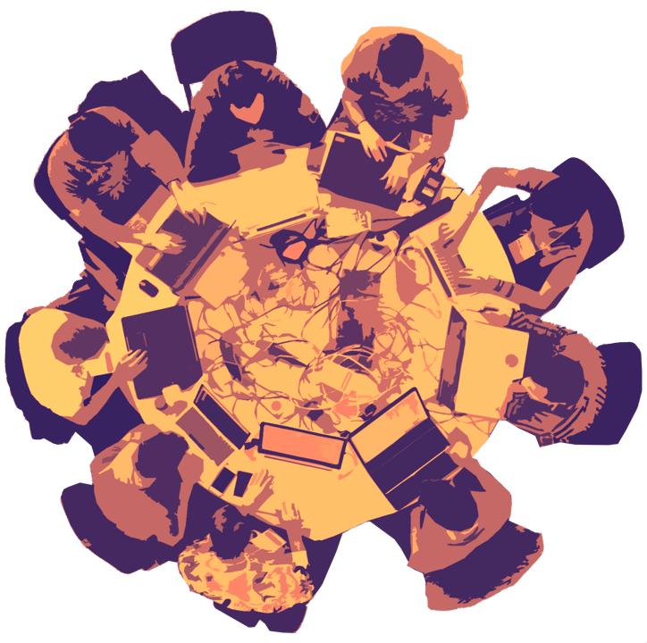

Хакердом проводит соревнования по компьютерной безопасности, занимается образовательными проектами и играет в CTF.

Мы проводим
RuCTF
Ежегодные открытые межвузовские соревнования и конференция по защите информации в Екатеринбурге. В 2019 году мы провели RuCTF уже в тринадцатый раз.
Директор:Александр Алексеев
RuCTFE
Ежегодные международные онлайн-соревнования по информационной безопасности, которые проходят уже больше десяти лет.
Главный:Роман Быков
 QCTF
QCTF
Соревнования на большом количестве площадок, в которых очно участвуют команды не более, чем из четырёх человек.
Всё это бесплатно и для всех
И вы можете помочь
Хакердом создаёт движухи в мире CTF — проводит регулярные соревнования, ведёт курс по безопасности онлайн и в университете, поддерживает площадку c тасками. За десятилетие мы провели более 30 соревнований и обучили тысячу студентов. Наш видео-курс посмотрели десятки тысяч человек. Больше 40 наших проектов выложено в открытый доступ на гитхабе: среди них одна из самых известных проверяющих систем для A/D CTF и исходники почти всех наших соревнований.
У большинства из этих проектов нет заказчиков или постоянных спонсоров, которые могли бы оплатить работу разработчиков и авторов, аренду серверов и домены. Если вы когда-нибудь получали удовольствие от наших соревнований, узнавали что-то новое из наших курсов, то станьте нашим спонсором! Обещаем потратить полученные деньги на разработку новых соревнований для всех желающих и курсов в бесплатном доступе. Вы можете оформить регулярные пожертвования или перевести деньги Андрею с пометкой «для Хакердома», он знает, что с ними делать.
Ещё один способ поддержать нас — это заказать CTF-соревнование для своей компании.
CTF под ключ
Сделаем соревнование на заказ для вашей компании.
Хотите провести соревнование по компьютерной безопасности для сотрудников своей компаниии? Мы занимаемся организацией соревнований уже более 10 лет и подготовим всё необходимое. Мы умеем делать соревнования как для новичков, так и с продвинутыми заданиями международного уровня.
Мы разработали PHDays CTF 2017, HITB PRO CTF 2019 и 2021, тасковый (вместе с Георгием Кигурадзе) и Attack/Defence этапы Ⅲ Кубка CTF России, Attack/Defence-этап и A/D часть финала IV Кубка России, HITB Lockdown CTF 2020 и другие соревнования.
Кто такие Хакердом
Команда «Хакердом» появилась осенью 2005 года на математико-механическом факультете Уральского Государственного Университета. Основной деятельностью команды являются изучение компьютерной безопасности, участие в соревнованиях Capture the Flag, а также проведение собственных соревнований.
Где нас найти
github.com/hackerdom
vk.com/hackerdom
t.me/hackerdom
twitter.com/hackerdom